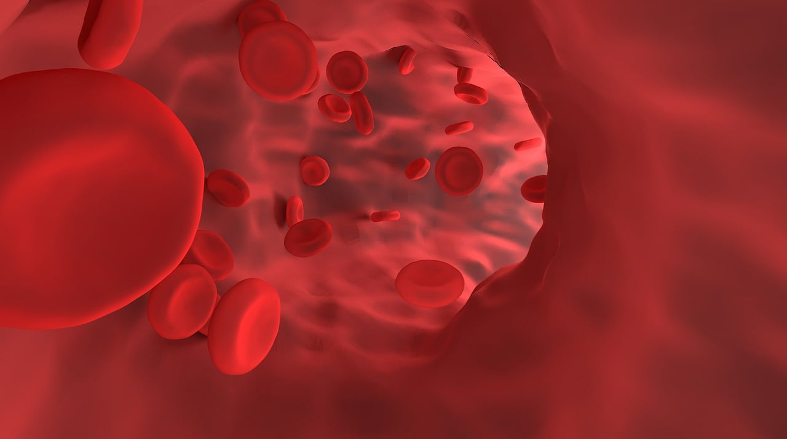

La teoría celular
¿RECONOCEMOS ESTA IMAGEN? Seguro que sí, bueno por si acaso: son GLÓBULOS ROJOS, con su forma de disco bicóncavo y su color rojo vermellón!
Son unas de las células más importantes de nuestro cuerpo y además le dan el color rojo a la sangre.

Glóbulos rojos, de Vector8DIY. Licencia Pixabay.
Vamos a empezar esta sección hablando de la TEORÍA CELULAR, la cual, como su nombre nos indica es una teoría que dice lo siguiente: todos los seres vivos estamos formados por células, las cuales son nuestras unidades estructurales y funcionales.
Vamos a empezar esta sección hablando de la TEORÍA CELULAR, la cual, como su nombre nos indica es una teoría que dice lo siguiente: todos los seres vivos estamos formados por células, las cuales son nuestras unidades estrunturales y funcionales.
Actividad Individual
Pero para conocerla mejor, vamos a hacer una actividad de búsqueda de información en Internet.
La información debemos redactarla en nuestro cuaderno y debe incluir los siguientes puntos:
- Postulados de la teoría celular.
- Antecedentes de la misma.
- Año en el que se promulgó.
- Autores de la misma con su biografía.
Para evaluar esta actividad vamos a utilizar la rúbrica que podrás ver pinchando aquí.
Paara buscar inforamción recomendamos visitar las siguientes páginas, aunque podemos utilizar las que queramos:
¡Ánimo!